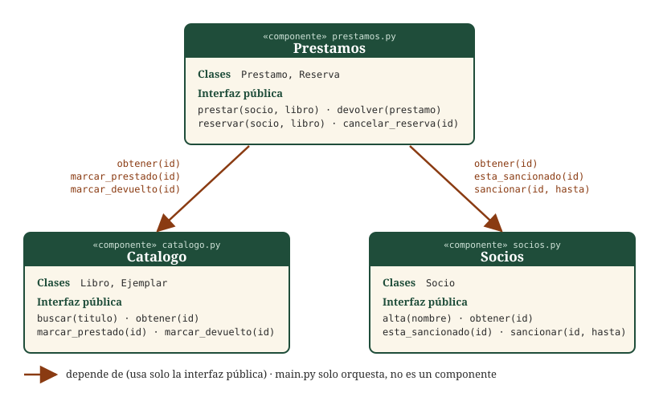

Préstamos activos
Reservas
Tres componentes que colaboran sin conocer el interior de los demás
Esta web está hecha con la misma arquitectura que la versión de consola en Python:
Catalogo, Socios y Prestamos son módulos independientes
(js/catalogo.js, js/socios.js, js/prestamos.js).
Solo Prestamos depende de los otros dos, y únicamente a través de sus funciones públicas.

Decisión sobre la petición del cliente
«Para ir más rápido, que Prestamos lea directamente la lista de libros de Catalogo.»
No lo hago. Si Prestamos leyera la lista interna de Catalogo, dependería de cómo guarda los libros ese componente, y cualquier cambio en él (por ejemplo, añadir ejemplares o pasar a una base de datos) rompería Prestamos sin avisar. En su lugar Prestamos usa solo obtener(id), marcar_prestado(id) y marcar_devuelto(id), que son igual de rápidos de usar; si algún día hace falta algo más, se añade una función pública a Catalogo.
Reglas de la biblioteca
- Un socio no puede tener más de 2 libros a la vez.
- Cada préstamo caduca a los 7 días.
- Cada título tiene varios ejemplares, cada uno con su propio estado.
- Un socio sancionado no puede pedir libros (se sanciona tantos días como de retraso al devolver).
- Se pueden reservar libros ya prestados; el ejemplar devuelto se guarda para quien reservó primero.
Para probar la caducidad y las sanciones sin esperar, usa los botones «+1 día» y «+7 días» de arriba.